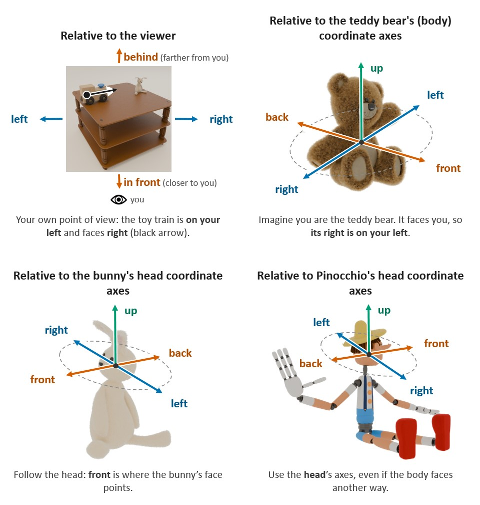

Loading…
Loading…
Thank you for taking part! The study takes about {{MINUTES}} minutes.
You will see {{N}} images of small scenes. Each scene contains a reference object (a teddy bear, a bunny or Pinocchio) and a target object (for example a cat, a car or a toy train). For each image, you will answer one yes/no question about where the target object is, or which way it is facing.
There are no trick questions and there is no time limit. We also record how long you take to answer, but this does not affect your score: what matters is answering as accurately as you can. You can use the buttons or the Y and N keys.
On the next page you'll see an example of each point of view.
The same directions (left, right, front, behind, up) can be measured from the viewer, from a whole object, or from one of its parts. Take a moment to look at each example.
